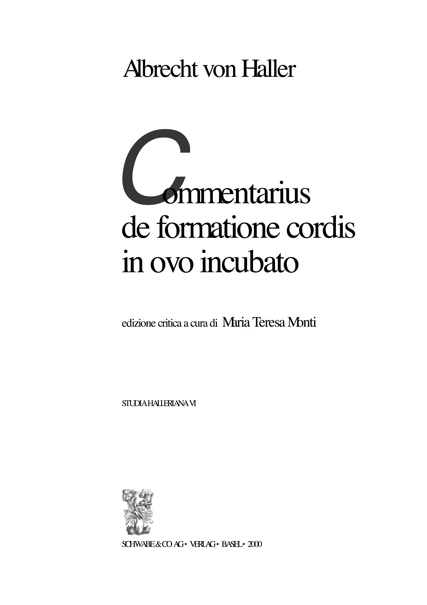
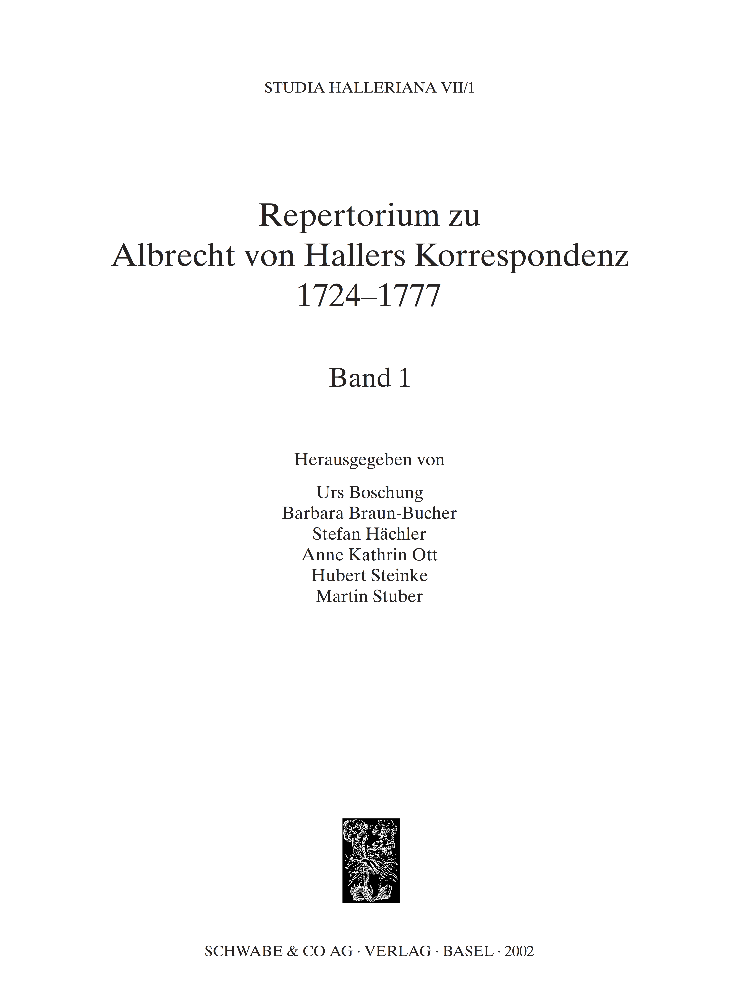
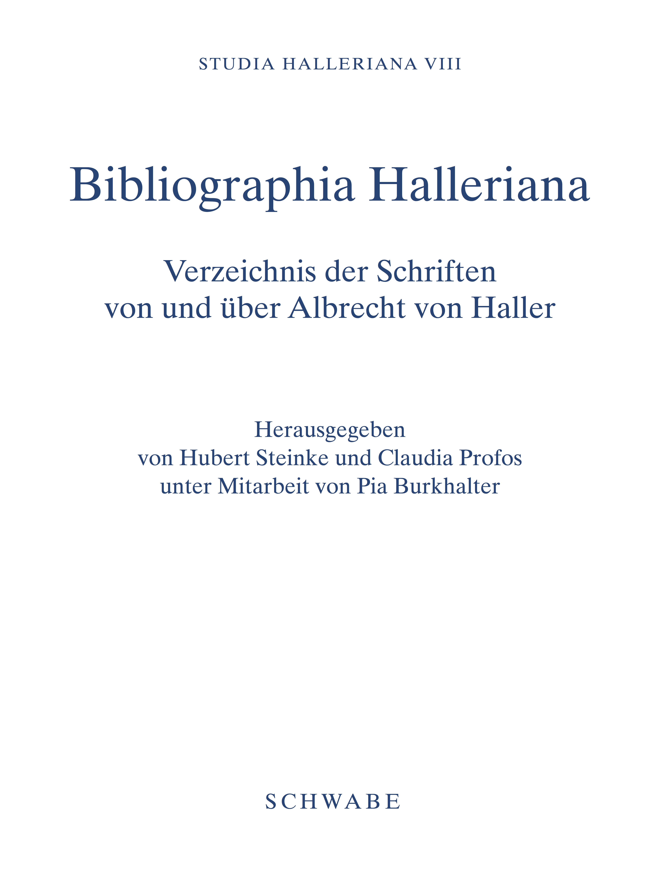

name: Title background-image: url(images/portraits.png) background-size: contain class: ## *Referencing annotations* <br/>as a core concept of the <br/>*hallerNet* edition and<br/> research platform <!-- <img style="position: absolute; top:180px; left: 0px; opacity: 1; z-index: 0; width: 100%;" src="images/haller.jpg"/> --> <div style="position: absolute; top: 380px; left: 100px;"> <p>Peter Daengeli, Cologne Center for eHumanities, <br/>University of Cologne</p> <p>Christian Forney, Institute of History, University of Bern</p> <p><strong><em>TEI 2019<br/> What is text, really? TEI and beyond</em></strong></p><p>September 16-20, University of Graz, Austria</p> <p style="font-size: 12px;">DOI: <a href="https://dx.doi.org/10.5281/zenodo.3446232">10.5281/zenodo.3446232</a></p> </div> --- name: Point of departure ## Point of departure <div id="haller1" class="gallery" style="position: absolute; left:-50px; top: 360px; background-color: black; padding: 5px; overflow-x: scroll; overflow-y: hidden; white-space: nowrap;"> <a href="images/Buch_FormationeCordis.png" title="Monti: Commentarius de formatione cordis in ovo incubato (2000)">  </a> <a href="images/Buch_Repertorium.png" title="Boschung et al.: Repertorium zu Albrecht von Hallers Korrespondenz 1724–1777 (2002)">  </a> <a href="images/Buch_Bibliographia.png" title="Steinke, Profos: Bibliographia Halleriana (2004)">  </a> <a href="images/Buch_HallersNetz.png" title="Stuber, Hächler, Lienhard: Hallers Netz (2005)"> <img src="images/Buch_HallersNetz.png" width="200px;" /> </a> <a href="images/Buch_GelehrteKritik.jpg" title=""> <img src="images/Buch_GelehrteKritik.jpg" width="170px;" /> </a> <a href="images/Buch_HallerWerlhof.png" title="Sonntag: Paul Gottlieb Werlhof’s Letters to Albrecht von Haller (2014)"> <img src="images/Buch_HallerWerlhof.png" width="170px;" /> </a> <a href="images/Buch_LebenWerkEpoche.jpg" title="Steinke: Albrecht von Haller: Leben - Werk - Epoche (2008)"> <img src="images/Buch_LebenWerkEpoche.jpg" width="170px;" /> </a> </div> <div class="contentarea"> <ul> <li>Haller as a subject of research since mid 19<sup>th</sup> century</li> <li>Continuously supported by digital means since 1991</li> </ul> </div> ??? Research on the Bernese poet, savant, physician, botanist, collector, encyclopedian, professor, experimenter, and magistrate **Albrecht von Haller (1708-1777)** has considerable tradition. After becoming a subject of research in the middle of the 19th century (with the main interest lying on poetic and political writing, theology and philosophy), the edition of sources and an engagement with Haller’s scientific work came to the fore during the 20th century. The last three decades (since ca. 1991) saw an enormous effort to catalog Haller's works and letters and to collect biographical metadata on all his ca. 1200 correspondents as well as other relevant actors in Haller's environment. This research was carried out using a commercial database software (FAUST Professional) and was published in a number of high-quality works, among the most notable of which figure the *Repertorium zu Albrecht von Hallers Korrespondenz 1724–1777* (Boschung et al. 2002) and *Bibliographia Halleriana* (Steinke and Profos 2004). --- name: Haller Online ## Transformation project “Haller online” (2016-2019) .contentarea[ * Transform the database-internal structure into a semantically modelled data structure (following the <svg xmlns="http://www.w3.org/2000/svg" id="teilogo" height="38" viewBox="0 0 800 800" width="38" version="1.1"> <title>I don't think this needs explaining at the TEI conference ¯\_(ツ)_/¯</title> <path fill="#c9b23e" d="m418 62 36 65 190.3 114.4-0.7 217.2 35.4 64.4v-269l-28.1-48.7z"/> <path fill="#f3d448" d="m418 62 33-19 234 143-34 19z"/> <path fill="#ffe14d" d="m713 237-28-51-34 19 28 49z"/> <path fill="#e5c944" d="m713 504v-267l-34 17v269z"/> <path d="m199 281h146.5v44.2h-49.1v134.8h-48.2v-134.8h-49.2v-44.2z"/> <path d="m368 281h129.3v38.2h-80.9v28.5h75.1v36.5h-75.1v35.3h83.3v40.5h-131.7v-179z"/> <path d="m527 281h52.3v179h-52.3v-179z"/> <path fill="#c9b23e" d="m86 243v269l29 50 233 142-36-64-190-116v-217z"/> <path fill="#ffe14d" d="m119 224 36 66-33 17-36-64z"/> <path fill="#e5c944" d="m155 506v-216l-33 17v217z"/> <path fill="#f3d448" d="m345 620-190-114-33 18 190 116z"/> <path fill="#ffe14d" d="m381 684-36-64-33 20 36 64z"/> <path d="m369.3 736.1 15.8-9v5.8l-5.3 3v17.9l-5.1 3v-17.9l-5.3 3z"/> <path d="m387.5 725.8 13.7-8.1v5.1l-8.6 5v3.8l8.1-4.7v4.9l-8.1 4.5 0.2 4.7 8.8-5.1v5.3l-14.1 8.3z"/> <path d="m414.8 710 5.6-3.2-5.3 14.5 5.9 8.8-5.9 3.4-3.4-5.7-3.1 9.4-5.9 3.4 5.9-15.6-5.5-8.4 5.8-3.2 3 5.6z"/> <path d="m421.3 706.2 15.8-9.2v5.8l-5.2 3.1v18l-5.3 2.8v-17.8l-5.3 3.2z"/> <path d="m447.3 691.2 13.7-7.9v4.9l-8.6 5.1v3.7l8-4.7v4.9l-8 4.7 0.1 4.7 8.9-5.3v5.5l-14.1 8.1z"/> <path d="m469.1 689.3v13l-4.9 2.8v-23.7l4.9-2.8 6.2 9.6v-13.2l4.9-2.8v23.7l-4.9 2.8z"/> <path d="m491.6 665.4c2.1-1.2 3.8-1.6 4.9-1.1 1.3 0.5 2.3 1.9 2.8 4l-4.7 4.1c0-0.6-0.2-1-0.3-1.3-0.4-0.4-0.8-0.6-1.2-0.7-0.3 0-0.9 0.1-1.3 0.4-1.1 0.6-2.1 1.8-2.6 3.5-0.6 1.3-0.8 3-0.8 5.1 0 2.6 0.2 4.2 0.8 4.9 0.5 0.6 1.5 0.7 2.4 0.1 1-0.6 1.7-1.4 2.3-2.5 0.5-1.1 0.7-2.4 1.1-4l4.5-0.7c-0.4 2-0.7 3.7-1.5 5.3-0.5 1.6-1.3 3-2.4 4.2-1 1.1-2.1 2.2-3.6 3-1.9 1.1-3.4 1.6-4.5 1.5s-2.1-0.8-3-2.3c-0.8-1.3-1.3-3.5-1.3-6.5 0-3.9 0.7-7.3 2.2-10.3 1.5-2.9 3.6-5.2 6.2-6.7z"/> <path d="m516.4 654.3c1.5 1.2 2.3 3.7 2.3 7.6 0 2.7-0.4 5.2-0.9 7.3-0.8 2.2-1.7 4.1-2.9 5.8-1.3 1.7-2.8 3.1-4.7 4.2-1.8 1.1-3.3 1.5-4.7 1.4-1.3-0.1-2.2-0.9-3-2.3-0.7-1.4-1.1-3.5-1.1-6.3 0-3.8 0.8-7.2 2.3-10.3 1.5-3 3.5-5.3 6.2-6.9 2.8-1.6 5-1.8 6.5-0.5zm-3.7 16.5c0.5-1.4 0.7-3.4 0.7-6 0-2.3-0.2-3.7-0.9-4.4-0.6-0.7-1.5-0.7-2.6 0-1 0.6-1.7 1.6-2.5 3-0.5 1.4-0.9 3.3-0.9 5.7s0.4 3.9 0.9 4.6c0.8 0.7 1.5 0.7 2.7 0.1 1.1-0.6 1.8-1.6 2.6-3"/> <path d="m536.6 647c0.2 1.3 0.3 2.8 0.3 4.4 0 2.5-0.1 4.6-0.5 6.2-0.4 1.7-1 3.2-1.7 4.5-0.8 1.4-1.5 2.5-2.3 3.3-1.1 1-2.2 1.9-3.2 2.4l-7.5 4.4-0.2-23.7 7.7-4.4c1.5-0.9 2.9-1.3 3.6-1.3 0.9 0.1 1.9 0.5 2.4 1.2 0.6 0.7 1 1.7 1.4 3zm-5.3 11.9c0.4-1 0.4-2.4 0.4-4.3 0-2.6-0.2-4.1-0.8-4.7-0.5-0.6-1.5-0.5-2.8 0.2l-1.3 0.8v13l1.3-0.8c0.9-0.6 1.7-1.2 2.3-1.8 0.3-0.6 0.7-1.4 0.9-2.4"/> <path d="m610.2 784.2 2.7-1.6 0.1 12.6-2.8 1.6z" transform="matrix(1.88 0 0 1.88 -607.4 -836.5)"/> <path d="m617.5 785.6 0.1 7-2.6 1.5-0.1-12.7 2.6-1.4 3.4 5-0.1-7 2.6-1.5 0.1 12.7-2.6 1.4z" transform="matrix(1.88 0 0 1.88 -607.4 -836.5)"/> <path d="m576.6 616.3c1.9-1.1 3.2-1.6 4.1-1.7 1 0 1.7 0.3 2.3 0.9 0.8 0.6 1.1 1.7 1.5 3l-5.1 4.1c-0.2-0.7-0.5-1.2-0.9-1.4-0.6-0.2-1.1 0-1.9 0.4-1.1 0.6-2.1 1.7-2.8 3.2-0.6 1.5-0.9 3.5-0.9 5.9 0 2.6 0.3 4.2 0.9 4.9 0.7 0.7 1.7 0.7 3 0 0.6-0.3 1.1-0.8 1.5-1.3 0.6-0.5 1.1-1.3 1.9-2.2v-2.3l-3.6 2v-4.9l8.1-4.6v10.1c-1.5 2.3-2.8 4.1-4 5.3-1.3 1.2-2.6 2.3-4.3 3.2-1.9 1.2-3.5 1.6-4.7 1.4-1.3-0.3-2.2-1.1-3-2.6-0.7-1.5-0.9-3.5-0.9-6-0.2-2.5 0.2-5 0.9-7.3 0.8-2.4 1.9-4.5 3.4-6.3 1.1-1.4 2.6-2.7 4.5-3.8z"/> <path d="m595.6 605.5 5.1-3 0.2 23.8-5.3 2.8z"/> <path d="m609.5 608.3v13l-4.9 2.8-0.2-23.7 4.9-2.8 6.4 9.4v-13l4.9-2.8v23.7l-4.9 2.8z"/> <path d="m624.2 588.9 5.1-2.8 0.2 23.7-5.3 3z"/> <path d="m631.9 584.6 15.8-9.2v6l-5.3 3v17.9l-5.2 3v-17.9l-5.3 3z"/> <path d="m650.1 574.1 5.3-3v23.6l-5.1 3.1z"/> <path d="m674.4 560 15.8-9.1v5.9l-5.3 3v17.8l-5.1 3v-17.8l-5.4 3z"/> <path d="m669.5 563.1 6.4 20-5.5 3.2-0.7-3.5-6 3.4-0.8 4.4-5.3 3.1 6.3-27.4 5.6-3.2zm-4.7 17.3 3.8-2.1-1.9-7.4-1.9 9.5"/> <path d="m692.8 549.4 5.1-3 0.2 23.7-5.3 3z"/> <path d="m706.3 565.2-6.3-19.9 5.4-3.2 4 14.9 3.5-19.2 5.3-3-6.2 27.2z"/> <path d="m719.9 533.8 13.9-8.1v5.1l-8.7 5.1v3.8l7.9-4.7v4.8l-7.9 4.6v4.7l8.9-5.1v5.4l-14.1 8.1z"/> </svg> guidelines) * Keeping everything under control <svg version="1.1" id="Layer_1" xmlns="http://www.w3.org/2000/svg" xmlns:xlink="http://www.w3.org/1999/xlink" x="0px" y="0px" width="30px" height="30px" viewBox="0 0 97 97" enable-background="new 0 0 97 97" xml:space="preserve"> <title>Git Version Control (currently using Gitlab)</title> <g> <path fill="#F05133" d="M92.71,44.408L52.591,4.291c-2.31-2.311-6.057-2.311-8.369,0l-8.33,8.332L46.459,23.19 c2.456-0.83,5.272-0.273,7.229,1.685c1.969,1.97,2.521,4.81,1.67,7.275l10.186,10.185c2.465-0.85,5.307-0.3,7.275,1.671 c2.75,2.75,2.75,7.206,0,9.958c-2.752,2.751-7.208,2.751-9.961,0c-2.068-2.07-2.58-5.11-1.531-7.658l-9.5-9.499v24.997 c0.67,0.332,1.303,0.774,1.861,1.332c2.75,2.75,2.75,7.206,0,9.959c-2.75,2.749-7.209,2.749-9.957,0c-2.75-2.754-2.75-7.21,0-9.959 c0.68-0.679,1.467-1.193,2.307-1.537V36.369c-0.84-0.344-1.625-0.853-2.307-1.537c-2.083-2.082-2.584-5.14-1.516-7.698 L31.798,16.715L4.288,44.222c-2.311,2.313-2.311,6.06,0,8.371l40.121,40.118c2.31,2.311,6.056,2.311,8.369,0L92.71,52.779 C95.021,50.468,95.021,46.719,92.71,44.408z"/> </g> </svg> * Gradually opening the rich data corpus (goal: FAIR data) * Setting the stage for the digital edition of Haller's correspondence and literary reviews * Inviting thematically related projects to the platform The “hallerNet” platform, launched in May 2019, is the most visible result of this transformation project: [https://hallernet.org](https://hallernet.org). ] ??? To future-proof the research data compiled in the database and to lay the foundations for future research, the Albrecht von Haller foundation granted financial support for a transformation project that followed the goal to homogenise the data and make it available to interested scholars. Following up with the growing interest for digital correspondence editions, this project entailed the development of a (relatively) generic edition platform and a piloting correspondence edition. The project was successfully carried out in a cooperation between the Institute of History of the University of Bern, providing in-depth expertise on the data structures, and the Cologne Center for eHumanities, contributing knowledge and experience in data modelling and digital editing. --- name: Metadata I ## Enriching transcriptions with Metadata I .contentarea[ Where quality of earlier editions allows for it, the encodings are based on the printed editions (through either OCR, double keying or prepress files). Print indices serve as a valuable source of knowledge. References to persons, places, institutions, works, topics and more may be extracted with a simple transformation after applying some styling to a digitised index. ] <div id="haller2" class="gallery" style="position: absolute; right:20px; top: 460px; padding: 5px; overflow-x: scroll; overflow-y: hidden; white-space: nowrap;"> <a href="images/indicesWord.png" title="Digitised Index of Sonntag's Pringle-Haller Correspondence (1999)"> </a> </div> ??? The hallerNet dataset, eocompassing metadata on some 3400 places, 17000 letters, 25000 actors and 34000 publications as well as several hundreds of archives, other institutions, documents, plants, and more serves as a unique foundation for the editorial work on the ca. 8000 letters and more than 9000 book reviews that are being edited in the course of the ongoing SNF research project “Online-edition of Albrecht von Haller's book reviews and letters: expertise and communiction in the emerging scientific community.” [(SNF project 157963)](http://p3.snf.ch/Project-157963). In order to reach the ambitious goals on time, the encoding process is based on retro-digitised print editions where available (and of appropriate quality). In addition to the transcription of the sources, the printed indices are of special interest. By manual analysis of the lemmata and applying some simple highlighting in MS Word, it is easy to extract the referenced entities (by page or letter, depending on the edition) and relate them to the digital encodings. This way, the manual linking process is assisted considerably. --- name: Metadata II ## Enriching transcriptions with Metadata II .contentarea[ From footnotes to annotated references / referencing annotations <br/><img id="ex0" src="images/ex0.png" width="900px;"/> <p style="font-size: 12pt;">Example from <em>Sonntag, Haller-Münchhausen correspondence</em>, Münchhausen's letter to Haller, 8 October 1736 (prepress file, MS Word).</p> ] ??? Whereas the information lifted from the indices is very valuable for classification and linking, the transcriptions of the sources account for the bulk of the editorial work. Besides checking and emending the transcriptions, their processing also involves consideration of the (past) editor's annotations, usually given in footnotes. This quickly led to a reflection on the character of annotations in a digital edition. Given the datacentric scope (and legacy) of the hallerNet platform and its primacy of object references, we chose to rearrange footnotes from print wherever possible as annotated references to specific database objects. --- ## Enriching transcriptions with Metadata II .contentarea[ The hallerNet transcription model employs three types of annotations: |||| |-|-|-| |`annotRef`| |Annotations that concern an object contained in the database<br/>`<rs type="person/place/etc" key="{$ID}"><note type="annotRef"/></rs>`| ||| ||| |`annotText`| |Textual annotations<br/>`<note type="annotText">`| ||| ||| |`annotFree`| |(Primarily historical) annotations that do not concern any specific object but<br/> e.g. the situation in which a letter was written<br/>`<note type="annotFree">`| ] ??? For this kind of annotation we coined the type `annotRef`, the main one of three types of annotations allowed in the transcriptions. The other two types are `annotText` for textual annotations and `annotFree` for loose annotations that are not attachable to any specific object. --- <br/><br/>An example from Münchhausen's letter to Haller, 8 October 1736: ```xml <p>Und da Sie selbst eine reise anhero zu thun gedencken, welches vermuthlich gegen die zeit, da der <rs type="person" key="person_00478" xml:id="Sonntag_2017_AvH-GAM_letter_05493_ref-4">H. D. Hugo<note type="annotRef" n="1"> <p>H. was currently attending the visiting King George II at Göhrde, near Lüneburg. In <rs type="letter" key="letter_15016" xml:id="Sonntag_2017_AvH-GAM_letter_05493_ref-5">his letter to Johannes Geßner of 14 Dec.</rs>, Haller mentions that he saw (in November) H.’s beautiful botanical library and herbarium in Hanover.</p> </note></rs>, als dero guter freund, ``` <svg xmlns="http://www.w3.org/2000/svg" xmlns:xlink="http://www.w3.org/1999/xlink" width="1793pt" height="476pt" viewBox="0.00 0.00 1792.55 476.00" style="max-width: 100%; height: auto;"> <g id="graph0" class="graph" transform="scale(1 1) rotate(0) translate(4 472)"> <title>%0</title> <polygon fill="#ffffff" stroke="transparent" points="-4,4 -4,-472 1788.5527,-472 1788.5527,4 -4,4"/> <!-- d1 --> <g id="node1" class="node"> <title>d1</title> <polygon fill="none" stroke="#c0c0c0" points="659.6231,-468 605.6231,-468 605.6231,-432 659.6231,-432 659.6231,-468"/> <text text-anchor="middle" x="632.6231" y="-445.8" font-family="Times,serif" font-size="14.00" fill="#000000">div</text> </g> <!-- d1e1 --> <g id="node2" class="node"> <title>d1e1</title> <polygon fill="none" stroke="#000000" points="659.6231,-396 605.6231,-396 605.6231,-360 659.6231,-360 659.6231,-396"/> <text text-anchor="middle" x="632.6231" y="-373.8" font-family="Times,serif" font-size="14.00" fill="#000000">p</text> </g> <!-- d1->d1e1 --> <g id="edge1" class="edge"> <title>d1->d1e1</title> <path fill="none" stroke="#c0c0c0" d="M632.6231,-431.8314C632.6231,-424.131 632.6231,-414.9743 632.6231,-406.4166"/> <polygon fill="#c0c0c0" stroke="#c0c0c0" points="636.1232,-406.4132 632.6231,-396.4133 629.1232,-406.4133 636.1232,-406.4132"/> </g> <!-- d1t2 --> <g id="node3" class="node"> <title>d1t2</title> <text text-anchor="middle" x="304.6231" y="-301.8" font-family="Times,serif" font-size="14.00" fill="#000000">Und da Sie selbst eine reise anhero zu thun gedencken, welches vermuthlich gegen die zeit, da der</text> </g> <!-- d1e1->d1t2 --> <g id="edge2" class="edge"> <title>d1e1->d1t2</title> <path fill="none" stroke="#000000" d="M605.5024,-372.0467C560.2059,-362.1035 467.1628,-341.6794 396.4652,-326.1605"/> <polygon fill="#000000" stroke="#000000" points="397.163,-322.7304 386.6451,-324.0048 395.6621,-329.5676 397.163,-322.7304"/> </g> <!-- d1e3 --> <g id="node4" class="node"> <title>d1e3</title> <polygon fill="none" stroke="#0000ff" points="659.6231,-324 605.6231,-324 605.6231,-288 659.6231,-288 659.6231,-324"/> <text text-anchor="middle" x="632.6231" y="-301.8" font-family="Times,serif" font-size="14.00" fill="#000000">rs</text> </g> <!-- d1e1->d1e3 --> <g id="edge3" class="edge"> <title>d1e1->d1e3</title> <path fill="none" stroke="#000000" d="M632.6231,-359.8314C632.6231,-352.131 632.6231,-342.9743 632.6231,-334.4166"/> <polygon fill="#000000" stroke="#000000" points="636.1232,-334.4132 632.6231,-324.4133 629.1232,-334.4133 636.1232,-334.4132"/> </g> <!-- d1t14 --> <g id="node20" class="node"> <title>d1t14</title> <text text-anchor="middle" x="748.6231" y="-301.8" font-family="Times,serif" font-size="14.00" fill="#000000">, als dero guter freund,</text> </g> <!-- d1e1->d1t14 --> <g id="edge19" class="edge"> <title>d1e1->d1t14</title> <path fill="none" stroke="#000000" d="M659.82,-361.1192C674.9624,-351.7204 694.0511,-339.8723 710.6466,-329.5716"/> <polygon fill="#000000" stroke="#000000" points="712.9183,-332.2811 719.5689,-324.0336 709.2267,-326.3336 712.9183,-332.2811"/> </g> <!-- d1e3a1029 --> <g id="node5" class="node"> <title>d1e3a1029</title> <ellipse fill="none" stroke="#0000ff" cx="75.6231" cy="-234" rx="75.7464" ry="18"/> <text text-anchor="middle" x="75.6231" y="-229.8" font-family="Times,serif" font-size="14.00" fill="#000000">@type="person"</text> </g> <!-- d1e3->d1e3a1029 --> <g id="edge4" class="edge"> <title>d1e3->d1e3a1029</title> <path fill="none" stroke="#0000ff" d="M605.5393,-291.118C602.5903,-289.9048 599.5838,-288.829 596.6231,-288 409.3874,-235.5728 353.0049,-280.197 160.6231,-252 153.9047,-251.0153 146.9207,-249.8203 139.9724,-248.5195"/> <polygon fill="#0000ff" stroke="#0000ff" points="140.3374,-245.0249 129.8529,-246.55 139.0001,-251.896 140.3374,-245.0249"/> </g> <!-- d1e3a1036 --> <g id="node6" class="node"> <title>d1e3a1036</title> <ellipse fill="none" stroke="#0000ff" cx="271.6231" cy="-234" rx="101.8207" ry="18"/> <text text-anchor="middle" x="271.6231" y="-229.8" font-family="Times,serif" font-size="14.00" fill="#000000">@key="person_00478"</text> </g> <!-- d1e3->d1e3a1036 --> <g id="edge5" class="edge"> <title>d1e3->d1e3a1036</title> <path fill="none" stroke="#0000ff" d="M605.464,-291.3671C602.5297,-290.1053 599.5472,-288.9501 596.6231,-288 590.8825,-286.1348 451.3327,-263.2389 356.9816,-247.8658"/> <polygon fill="#0000ff" stroke="#0000ff" points="357.2893,-244.3698 346.8566,-246.2167 356.1639,-251.2788 357.2893,-244.3698"/> </g> <!-- d1e3a1048964 --> <g id="node7" class="node"> <title>d1e3a1048964</title> <ellipse fill="none" stroke="#0000ff" cx="632.6231" cy="-234" rx="240.6722" ry="18"/> <text text-anchor="middle" x="632.6231" y="-229.8" font-family="Times,serif" font-size="14.00" fill="#000000">@xml:id="Sonntag_2017_AvH-GAM_letter_05493_ref-4"</text> </g> <!-- d1e3->d1e3a1048964 --> <g id="edge6" class="edge"> <title>d1e3->d1e3a1048964</title> <path fill="none" stroke="#0000ff" d="M632.6231,-287.8314C632.6231,-280.131 632.6231,-270.9743 632.6231,-262.4166"/> <polygon fill="#0000ff" stroke="#0000ff" points="636.1232,-262.4132 632.6231,-252.4133 629.1232,-262.4133 636.1232,-262.4132"/> </g> <!-- d1t4 --> <g id="node8" class="node"> <title>d1t4</title> <text text-anchor="middle" x="931.6231" y="-229.8" font-family="Times,serif" font-size="14.00" fill="#000000">H. D. Hugo</text> </g> <!-- d1e3->d1t4 --> <g id="edge7" class="edge"> <title>d1e3->d1t4</title> <path fill="none" stroke="#0000ff" d="M659.7842,-291.3731C662.7182,-290.1102 665.7,-288.953 668.6231,-288 757.2758,-259.0973 787.401,-275.5509 881.0222,-252.1571"/> <polygon fill="#0000ff" stroke="#0000ff" points="882.0929,-255.4954 890.8976,-249.6024 880.3397,-248.7185 882.0929,-255.4954"/> </g> <!-- d1e5 --> <g id="node9" class="node"> <title>d1e5</title> <polygon fill="none" stroke="#ff0000" points="1044.6231,-252 990.6231,-252 990.6231,-216 1044.6231,-216 1044.6231,-252"/> <text text-anchor="middle" x="1017.6231" y="-229.8" font-family="Times,serif" font-size="14.00" fill="#000000">note</text> </g> <!-- d1e3->d1e5 --> <g id="edge8" class="edge"> <title>d1e3->d1e5</title> <path fill="none" stroke="#0000ff" d="M659.7351,-291.2157C662.6786,-289.9834 665.6761,-288.8765 668.6231,-288 799.6953,-249.0176 845.267,-289.9091 980.6089,-251.676"/> <polygon fill="#0000ff" stroke="#0000ff" points="981.8932,-254.9473 990.5111,-248.7843 979.9309,-248.2279 981.8932,-254.9473"/> </g> <!-- d1e5a1029 --> <g id="node10" class="node"> <title>d1e5a1029</title> <ellipse fill="none" stroke="#ff0000" cx="871.6231" cy="-162" rx="85.0568" ry="18"/> <text text-anchor="middle" x="871.6231" y="-157.8" font-family="Times,serif" font-size="14.00" fill="#000000">@type="annotRef"</text> </g> <!-- d1e5->d1e5a1029 --> <g id="edge9" class="edge"> <title>d1e5->d1e5a1029</title> <path fill="none" stroke="#ff0000" d="M990.5069,-220.4154C987.5108,-218.9223 984.5033,-217.427 981.6231,-216 959.6368,-205.1069 935.1339,-193.0684 914.8448,-183.1275"/> <polygon fill="#ff0000" stroke="#ff0000" points="916.3637,-179.9743 905.8434,-178.7194 913.285,-186.2609 916.3637,-179.9743"/> </g> <!-- d1e5a1037 --> <g id="node11" class="node"> <title>d1e5a1037</title> <ellipse fill="none" stroke="#ff0000" cx="1017.6231" cy="-162" rx="42.8206" ry="18"/> <text text-anchor="middle" x="1017.6231" y="-157.8" font-family="Times,serif" font-size="14.00" fill="#000000">@n="1"</text> </g> <!-- d1e5->d1e5a1037 --> <g id="edge10" class="edge"> <title>d1e5->d1e5a1037</title> <path fill="none" stroke="#ff0000" d="M1017.6231,-215.8314C1017.6231,-208.131 1017.6231,-198.9743 1017.6231,-190.4166"/> <polygon fill="#ff0000" stroke="#ff0000" points="1021.1232,-190.4132 1017.6231,-180.4133 1014.1232,-190.4133 1021.1232,-190.4132"/> </g> <!-- d1e7 --> <g id="node12" class="node"> <title>d1e7</title> <polygon fill="none" stroke="#ff0000" points="1132.6231,-180 1078.6231,-180 1078.6231,-144 1132.6231,-144 1132.6231,-180"/> <text text-anchor="middle" x="1105.6231" y="-157.8" font-family="Times,serif" font-size="14.00" fill="#000000">p</text> </g> <!-- d1e5->d1e7 --> <g id="edge11" class="edge"> <title>d1e5->d1e7</title> <path fill="none" stroke="#ff0000" d="M1039.8292,-215.8314C1050.6681,-206.9632 1063.8675,-196.1637 1075.5909,-186.5718"/> <polygon fill="#ff0000" stroke="#ff0000" points="1077.9009,-189.2041 1083.4241,-180.1628 1073.4682,-183.7864 1077.9009,-189.2041"/> </g> <!-- d1t8 --> <g id="node13" class="node"> <title>d1t8</title> <text text-anchor="middle" x="809.6231" y="-85.8" font-family="Times,serif" font-size="14.00" fill="#000000">H. was currently attending the visiting King George II at Göhrde, near Lüneburg. In</text> </g> <!-- d1e7->d1t8 --> <g id="edge12" class="edge"> <title>d1e7->d1t8</title> <path fill="none" stroke="#ff0000" d="M1078.4236,-147.4874C1075.4971,-146.2021 1072.5276,-145.0085 1069.6231,-144 1027.9938,-129.5446 981.2036,-118.3556 938.9104,-110.009"/> <polygon fill="#ff0000" stroke="#ff0000" points="939.3135,-106.5221 928.8303,-108.0562 937.9821,-113.3943 939.3135,-106.5221"/> </g> <!-- d1e9 --> <g id="node14" class="node"> <title>d1e9</title> <polygon fill="none" stroke="#006400" points="1132.6231,-108 1078.6231,-108 1078.6231,-72 1132.6231,-72 1132.6231,-108"/> <text text-anchor="middle" x="1105.6231" y="-85.8" font-family="Times,serif" font-size="14.00" fill="#000000">rs</text> </g> <!-- d1e7->d1e9 --> <g id="edge13" class="edge"> <title>d1e7->d1e9</title> <path fill="none" stroke="#ff0000" d="M1105.6231,-143.8314C1105.6231,-136.131 1105.6231,-126.9743 1105.6231,-118.4166"/> <polygon fill="#ff0000" stroke="#ff0000" points="1109.1232,-118.4132 1105.6231,-108.4133 1102.1232,-118.4133 1109.1232,-118.4132"/> </g> <!-- d1t11 --> <g id="node19" class="node"> <title>d1t11</title> <text text-anchor="middle" x="1451.6231" y="-85.8" font-family="Times,serif" font-size="14.00" fill="#000000">, Haller mentions that he saw (in November) H.’s beautiful botanical library and herbarium in Hanover.</text> </g> <!-- d1e7->d1t11 --> <g id="edge18" class="edge"> <title>d1e7->d1t11</title> <path fill="none" stroke="#ff0000" d="M1132.7732,-156.3503C1180.0369,-146.515 1279.5852,-125.7998 1354.9557,-110.1158"/> <polygon fill="#ff0000" stroke="#ff0000" points="1355.8773,-113.499 1364.9545,-108.0351 1354.4511,-106.6459 1355.8773,-113.499"/> </g> <!-- d1e9a1029 --> <g id="node15" class="node"> <title>d1e9a1029</title> <ellipse fill="none" stroke="#006400" cx="744.6231" cy="-18" rx="69.9404" ry="18"/> <text text-anchor="middle" x="744.6231" y="-13.8" font-family="Times,serif" font-size="14.00" fill="#000000">@type="letter"</text> </g> <!-- d1e9->d1e9a1029 --> <g id="edge14" class="edge"> <title>d1e9->d1e9a1029</title> <path fill="none" stroke="#006400" d="M1078.4826,-75.3088C1075.5447,-74.0584 1072.5563,-72.9218 1069.6231,-72 964.2078,-38.8732 932.2422,-56.2895 823.6231,-36 817.8652,-34.9245 811.8903,-33.7226 805.9213,-32.4639"/> <polygon fill="#006400" stroke="#006400" points="806.4343,-28.9941 795.9208,-30.3043 804.9567,-35.8363 806.4343,-28.9941"/> </g> <!-- d1e9a1036 --> <g id="node16" class="node"> <title>d1e9a1036</title> <ellipse fill="none" stroke="#006400" cx="928.6231" cy="-18" rx="96.014" ry="18"/> <text text-anchor="middle" x="928.6231" y="-13.8" font-family="Times,serif" font-size="14.00" fill="#000000">@key="letter_15016"</text> </g> <!-- d1e9->d1e9a1036 --> <g id="edge15" class="edge"> <title>d1e9->d1e9a1036</title> <path fill="none" stroke="#006400" d="M1078.2374,-75.9611C1075.3473,-74.5835 1072.4371,-73.2388 1069.6231,-72 1041.4186,-59.5836 1009.3831,-47.183 982.9833,-37.4022"/> <polygon fill="#006400" stroke="#006400" points="984.123,-34.0922 973.5296,-33.9221 981.7048,-40.6613 984.123,-34.0922"/> </g> <!-- d1e9a1048964 --> <g id="node17" class="node"> <title>d1e9a1048964</title> <ellipse fill="none" stroke="#006400" cx="1283.6231" cy="-18" rx="240.6722" ry="18"/> <text text-anchor="middle" x="1283.6231" y="-13.8" font-family="Times,serif" font-size="14.00" fill="#000000">@xml:id="Sonntag_2017_AvH-GAM_letter_05493_ref-5"</text> </g> <!-- d1e9->d1e9a1048964 --> <g id="edge16" class="edge"> <title>d1e9->d1e9a1048964</title> <path fill="none" stroke="#006400" d="M1133.0058,-75.9543C1135.8966,-74.578 1138.8077,-73.2355 1141.6231,-72 1168.2862,-60.2996 1198.36,-48.6484 1223.9446,-39.1798"/> <polygon fill="#006400" stroke="#006400" points="1225.3356,-42.3976 1233.5139,-35.6622 1222.9203,-35.8274 1225.3356,-42.3976"/> </g> <!-- d1t10 --> <g id="node18" class="node"> <title>d1t10</title> <text text-anchor="middle" x="1663.6231" y="-13.8" font-family="Times,serif" font-size="14.00" fill="#000000">his letter to Johannes Geßner of 14 Dec.</text> </g> <!-- d1e9->d1t10 --> <g id="edge17" class="edge"> <title>d1e9->d1t10</title> <path fill="none" stroke="#006400" d="M1132.7149,-75.146C1135.6623,-73.9273 1138.6662,-72.8426 1141.6231,-72 1306.7579,-24.9411 1357.9212,-54.8449 1532.5126,-36.0681"/> <polygon fill="#006400" stroke="#006400" points="1532.9978,-39.5358 1542.5488,-34.9501 1532.2227,-32.5788 1532.9978,-39.5358"/> </g> </g> </svg> ??? This example illustrates the very straightforward TEI encoding of an `annotRef`. The reference to the database object `person_00478` (H. D. Hugo) is annotated with a `note` of the type `annotRef`. This note contains another (simple, not furter annotated) reference to a letter. Annotated references could, in theory, nest. --- <br/><br/>And its rendering in the frontend: <!-- <script> function pictureChange() { document.getElementById("ex").src="images/ex2.png"; } </script> <p><input type="button" id="theButton" value="click me!" onclick="pictureChange()"></p> --> <button id="modal" style="position: absolute; top: 500px; left: 965px; background-color:#939309; color: white; font-size: 16px;">Click to trigger the modal.</button> ??? In the user interface, all referenced objects are displayed in a modal that offers some basic information about the object and a link to the database. Wherever a reference is enriched by this kind of reference annotation, this is also printed in the modal and thus lending more context to the linking of the object, in many cases also explaining the reason why a specific object is linked and with what certainty. --- name: ## Primacy of object references .contentarea[ Analytical potential: deriving social profiles of correspondences based on structured information on social positions and places of activity of mentioned actors. ] .scrollable[ ```xml <!-- social position (excerpt of H. D. Hugo (@xml:id='person_00478')) --> <note n="sn_16.113.000"> <term n="sn_16.113.100" cRef="#tax_16.113.000_student"/> <date type="analytical" n="sn_16.113.200" from="1709" to="1711"/> […] </note> <note n="sn_16.113.000"> <term n="sn_16.113.100" cRef="#tax_16.113.000_arzt"/> <date type="analytical" n="sn_16.113.200" to="1760" from="1715"/> […] <date type="to" n="sn_16.113.220" notBefore="1750" notAfter="1760" cert="low"> <note type="evidence">Position wohl bis zum Tod inne gehabt.</note> </date> </note> <!-- place of activity (excerpt of @xml:id='person_00703') --> <note n="sn_16.041.000" hal:desc="korres_verbund_wirkungsorte"> <ref n="sn_16.041.100" target="place_00718">Leiden</ref> <date type="analytical" n="sn_16.041.200" from="1709" to="1711"/> […] </note> <note n="sn_16.041.000" hal:desc="korres_verbund_wirkungsorte"> <ref n="sn_16.041.100" target="place_00603">Hannover</ref> <date type="analytical" n="sn_16.041.200" from="1715" to="1760"/> […] <date type="to" n="sn_16.041.220" notAfter="1760"> <note type="evidence">Wirkungsort wohl bis zum Tod</note> </date> […] </note> ``` ] <!-- (Münchhausen:) <note n="sn_16.041.000"> <ref n="sn_16.041.100" target="place_00651">Jena</ref> <date type="analytical" n="sn_16.041.200" from="1707" to="1709"/> […] </note> <note n="sn_16.041.000"> <ref n="sn_16.041.100" target="place_00594">Halle a.d. Saale</ref> <date type="analytical" n="sn_16.041.200" when="1710"/> […] </note> <note n="sn_16.041.000"> <ref n="sn_16.041.100" target="place_01086">Utrecht</ref> <date type="analytical" n="sn_16.041.200" when="1711"/> […] </note> <note n="sn_16.041.000"> <ref n="sn_16.041.100" target="place_00651">Jena</ref> <date type="analytical" n="sn_16.041.200" from="1711" to="1712"/> […] </note> <note n="sn_16.041.000"> <ref n="sn_16.041.100" target="place_00473">Dresden</ref> <date type="analytical" n="sn_16.041.200" from="1714" to="1716"/> […] </note> <note n="sn_16.041.000"> <ref n="sn_16.041.100" target="place_00398">Celle</ref> <date type="analytical" n="sn_16.041.200" from="1716" to="1722"/> […] </note> <note n="sn_16.041.000"> <ref n="sn_16.041.100" target="place_00596">Hamburg</ref> <date type="analytical" n="sn_16.041.200" from="1722" to="1723"/> […] </note> <note n="sn_16.041.000"> <ref n="sn_16.041.100" target="place_00623">Hildesheim</ref> <date type="analytical" n="sn_16.041.200" from="1723" to="1726"/> […] </note> <note n="sn_16.041.000"> <ref n="sn_16.041.100" target="place_00921">Regensburg</ref> <date type="analytical" n="sn_16.041.200" from="1726" to="1728"/> […] </note> <note n="sn_16.041.000"> <ref n="sn_16.041.100" target="place_00603">Hannover</ref> <date type="analytical" n="sn_16.041.200" from="1728" to="1770"/> […] </note> --> <div style="position: absolute; left: 900px; top: 510px;"> We have yet to settle on sensible rules for the computational evaluation of (concurring) <code>@from</code>, <code>@to</code>, <code>@notBefore</code>, <code>@notAfter</code>. </div> ??? It is quite common for edition projects to compile "-ographies" and to interlink occurrences between the source text(s) and the object metadata. Given that the hallerNet editions can build on a very rich metadata collection from day one, this linking practice is evidently being applied, too. However thanks to the rich information available on the hallerNet actors, object references are also used analytically, e.g. to derive a social profile of a specific correspondence (based on the level on a social stratum when a letter was written). To better understand this slide: imagine Gerlach Adolph von Münchhausen (`person_00703`) is mentioned in a letter written at a given date. The object reference allows to query the metadata for Münchhausen's social status and place of activity at that point in time. Applied over the whole (or a chosen phase) of a correspondence this allows to derive significant information that is otherwise hardly evaluable. This functionality is not yet part of the hallerNet platform, but all the pieces exist and wait to be plugged together. --- name: Vision ## Future developments .contentarea[ * Further internal unification and interlinking of the data, esp. the bibliographical data (cf. [TEI 2019 paper by Antonio Rojas Castro](https://gams.uni-graz.at/o:tei2019.114/sdef:TEI/get?context=context:tei2019.papers)). * Tighten model and adherence to it (by adding more specific Schematron checks) * External interlinking * [correspsearch.net](https://correspsearch.net) (letters) * [histhub.ch](https://histhub.ch) (persons, places) * [metagrid.ch](https://metagrid.ch) (persons, places) * And we are also looking forward to implement the [prosopogrAPhI](https://github.com/GVogeler/prosopogrAPhI). ] </div>